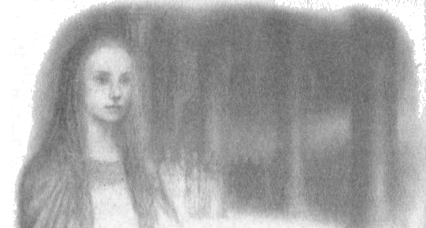

10
Başta, genç ve güçlüyken giden ve şimdi geri döndüğünde, çektiği işkenceler ve zahmetler yüzünden ölümlü insanlar arasındaki yaşlılara benzeyen Gwindor’u kendi halkı tanımadı; aynı zamanda sakat da kalmıştı. Ama Kral Orodreth’in kızı Finduilas onu tanıdı ve ona kucak açtı, çünkü eskiden ona âşıktı ve gerçekten de, Nirnaeth’ten önce nişanlanmışlardı ve Gwindor onun güzelliğine öyle âşıktı ki ona Faelivrin, yani güneşin Ivrin göletlerindeki parıltısı, adını vermişti.
Böylece Gwindor eve döndü ve onun hatırına, Túrin de onunla birlikte kabul edildi; çünkü Gwindor onun yiğit bir insan ve Doriathlı Beleg Cúthalion’un sevgili dostu olduğunu söyledi. Ama Gwindor onun ismini söyleyecekken, Túrin onu engelledi ve şöyle dedi: “Ben Úmarth oğlu Agarwaen’im (yani Kötükaderli’nin oğlu Kanlekeli), ormandan bir avcı.” Ama elfler bu ismi (diğer sebepleri bilmeden) arkadaşının ölümünden dolayı aldığını tahmin etse de, onu daha fazla sorgulamadılar.
Nargothrond’un kurnaz demircileri kılıç Anglachel’i Túrin için yeniden dövdü ve kılıç simsiyah kalsa da, kenarları solgun bir ateşle parladı. Sonra Túrin’in kendisi de, o silahla başardıklarının söylentileri yüzünden, Nargothrond’da Mormegil, yani Kara Kılıç olarak bilinir oldu; ama o, kılıca Gurthang, yani Ölüm Demiri adını verdi.
Orklara karşı savaştaki yiğitliği ve becerisi sayesinde, Túrin Orodreth’in lütfuna nail oldu ve divanına kabul edildi. Túrin, Nargothrond Elflerinin savaş tarzından, pusu, sinsilik ve gizli oklar kullanmalarından hoşlanmıyordu ve bu yöntemin bırakılmasını, düşmanın hizmetkarlarına saldırmak, açık savaş ve kovalamaca için güçlerini kullanmalarını öğütledi. Ama Gwindor Kral’ın divanında, bu konuda her zaman Túrin’e karşı konuştu, kendisinin Angband’da bulunduğunu ve Morgoth’un gücünü gördüğünü, planlarına dair bir fikri olduğunu söyledi. “Nihayetinde, küçük zaferler faydasız çıkacaktır,” dedi; “zira Morgoth düşmanları arasında en yürekli olanların nerede bulunabileceğini böyle öğrenir ve onları yok etmeye yetecek gücü toplar. Elflerin ve Edain’in müttefik kudretinin tamamı, sırf onu kontrol altına almak ve kuşatmak yoluyla barış getirmeye yeterli oldu; gerçekten de uzun sürdü, lâkin ancak Morgoth kuşatmayı kırana dek ve uygun zamanı beklediği için; ve artık böyle bir birlik kurulamaz. Hayatta kalma umudu yalnızca gizliliğe bağlı. Valar gelene dek.”
“Valar!” dedi Túrin. “Onlar sizi terk ettiler ve insanları küçük görüyorlar. Sonsuz Deniz’in üzerinden batıya, batıdaki ölmeye yüz tutmuş günbatımına bakmanın ne faydası var? Bizim işimiz olan tek bir Vala var, o da Morgoth; ve sonunda onu alt edemezsek de, en azından onu incitmiş, engellemiş oluruz. Çünkü, küçük de olsa, zafer zaferdir ve kıymeti yalnızca ardından gelenlere bağlı değildir. Ama aynı zamanda elverişlidir de. Nihai olarak, gizlilik mümkün değildir: Morgoth’a karşı tek duvar, silahtır. Onu durdurmak için hiçbir şey yapmazsanız, çok sene geçmeden Beleriand’ın tamamı onun gölgesinin altına girecek ve sonra sizi teker teker saklandığınız yerden çıkartacak. Sonra ne olacak peki? Geriye kalan zavallılar güneye ve batıya kaçacak, Morgoth ile Ossë arasında sıkışarak Deniz’in kıyılarında sinecek. Kısa ömürlü de olsa, bir süreliğine zafer kazanmak en iyisi, çünkü sonu daha kötü olmayacak. Gizlilikten bahsediyorsun, tek umudun bu olduğunu söylüyorsun; ama Morgoth’un en son, en ufak izcisine, casusuna kadar, her birine pusu kursanız, her birinin yolunu kesseniz, hiçbirinin Angband’a haber götürmemesini sağlayabilseniz bile, o yine de buna bakarak sizin yaşadığınızı öğrenir ve nerede yaşadığınızı tahmin eder. Aynı zamanda, şunu da söylüyorum: ölümlü insanların ömrü, Elflerinkinin yanında pek kısa olsa da, onu kaçarak ya da boyun eğerek geçirmektense, savaşta harcamayı tercih ederler. Húrin Thalion’un meydan okuması büyük bir başarıdır; ve Morgoth yapanı öldürse de, başarıyı olmamış kılamaz. Batı’nın Efendileri bile saygı duyar buna; hem, ne Morgoth’un, ne de Manwë’nin silemeyeceği şekilde, Arda’nın tarihine yazılmış değil midir?”
“Ulu meselelerden bahsediyorsun,” diye yanıt verdi Gwindor, “ve Eldar arasında yaşadığın pek aşikar. Ama Morgoth ile Manwë’yi bir arada düşünüyorsan, Valar’dan elflerin ve insanların düşmanları olarak bahsediyorsan, üzerinde bir karanlık var demektir; zira Valar hiçbir şeyi küçük görmez, özellikle de Iluvatar'ın Çocuklarını. Eldar’ın umutlarının tümünü bilmiyorsun. Bir kehanete göre, Orta Dünya’dan bir haberci, gölgelerin arasından geçip Valinor’a varacak bir gün ve Manwë dinleyecek, Mandos merhamet edecek. Noldor’un ve keza Edain’in tohumunu o vakit için saklamaya çalışmamalı mıyız dersin? Ve artık Círdan güneyde yaşıyor ve gemiler inşa ediliyor; lâkin sen gemilerden, denizden ne anlarsın? Sen şahsını ve namını düşünüyorsun ve bizden de aynısını yapmamızı bekliyorsun; lâkin kendimizden başkalarını da düşünmeliyiz biz, zira herkes savaşıp düşemez ve onları savaştan ve yıkımdan korumalıyız elimizden geldiği müddetçe.”
“O zaman, henüz zaman varken onları gemilerinize gönderin,” dedi Túrin.
“Círdan onları taşıyabilse dahi,” dedi Gwindor, “onlar bizden ayrılmaz. Mümkün olduğu sürece birlikte yaşamalıyız ve ölüme kur yapmamalıyız.”
“Bütün bunlara yanıl verdim,” dedi Túrin. “Sınırlar yiğitçe korunmalı ve düşman toplanmadan sert darbeler indirilmeli; uzun süre birlikte yaşamak için en büyük umudumuz bunda. Hem, bu bahsettiklerin, ormanda saklananları, yalnız gezenleri kurt gibi avlayanları, miğferini ve desenli kalkanını takıp, kendi ordusundan çok daha büyük olmasına aldırmadan düşmanlarını kovalayandan daha fazla mı sever? En azından Edain kadınları sevmez. Erkekleri Nirnaeth Arnoediad’dan alıkoymadılar.”
“Ama o meydanda savaşılmasa çekeceklerinden çok daha büyük acılar çektiler,” dedi Gwindor.
Ama Túrin Orodreth’in iyice gözüne girdi ve Kral’ın baş danışmanı oldu, Kral her konuyu ona danışmaya başladı. O günlerde Nargothrond Elfleri gizlilikten vazgeçtiler ve büyük bir silah hâzinesi oluşturuldu; ve Túrin’in tavsiyesi üzerine Noldor, silahlarını daha hızlı nakletmek için Narog üzerine Felagund kapılarından başlayan ihtişamlı bir köprü inşa etti, çünkü savaş şimdi daha çok Narog’un doğusunda, Saklı Ova’da sürüyordu. Şimdi, Nargothrond’un kuzey bataklıkları, Ginglith ile Narog’un kaynaklarının çevresindeki “Tartışmalı Diyar” ve Núath koruluklarının saçaklarını içeriyordu. Nenning ile Narog arasına hiçbir ork gelmiyordu; ve Narog’un doğusunda, diyarları Teiglin’e ve Nibin-noeg kıraçlarının sınırlarına dek uzanıyordu.
Gwindor şerefini yitirdi, çünkü artık silah konusunda yetkin değildi ve gücü azdı; ve sık sık sakat sol kolu ağrıyordu. Ama Túrin gençti ve tam erişkinliğine yeni ulaşmıştı; ve görünüşüyle gerçekten de Morwen Eledhwen’in oğluydu: uzun boylu, siyah saçlı, beyaz tenli, gri gözlüydü ve yüzü, Kadim Günlerde, tüm diğer ölümlü erkeklerinkinden daha güzeldi. Konuşması ve tavrı, Doriath’ın kadim krallığına yaraşırdı ve elflerin arasındayken bile, ilk bakışta Noldor’un büyük evlerinden birine aitmiş sanılabilirdi. Túrin o kadar yiğitti, silahta, özellikle de kılıç ve kalkanda o kadar becerikliydi ki, elfler, talihsizlik ya da uzaktan habis bir ok eseri olmadığı sürece onun öldürülemeyeceğini söylüyordu. Bu yüzden, onu korumak için ona cüce zırhı verdiler; ve haşin bir ruh hali içindeyken Túrin silahhanelerde tamamen yaldızlı bir cüce maskesi buldu ve savaştan önce taktı ve düşmanları onun önünden kaçtı.
Túrin istediğini elde ettiği, her şey iyi gittiği, yüreğinin dilediği gibi bir işi olduğu ve o yürekte şeref olduğu için herkese karşı nazikti ve eskiden olduğu kadar haşin değildi, öyle ki hemen hemen bütün yürekler onun lehine dönmüştü; ve çok kişi ona Adanedhel, yani Elf-insan diyordu. Ama özellikle de Orodreth’in kızı Finduilas, o ne zaman yakına gelse ya da salondaysa, yüreğinin kıpırdandığını hissediyordu. Finduilas, Finarfin evindeki gibi altın saçlıydı ve Túrin onu görmekten, onunla birlikte olmaktan zevk almaya başladı; çünkü Finduilas ona kendi soydaşlarını, babasının evindeki Dor-lómin kadınlarını hatırlatıyordu.
Başta Túrin onunla yalnızca Gwindor yakınlardayken görüşüyordu; ama bir süre sonra Finduilas onu aramaya başladı, öyle ki zaman zaman, tesadüf eseriymiş gibi görünse de, yalnızken karşılaşıyorlardı. O zaman, Finduilas Túrin’e, pek az ve nadiren gördüğü Edain, Túrin’in ülkesi ve akrabaları hakkında sorular soruyordu.
Túrin, bu konularda onunla serbestçe konuşuyordu, ama doğduğu yerin, akrabalarının adlarını söylemiyordu; ve bir seferinde ona şöyle dedi: “Bir kız kardeşim vardı, Lalaith, ya da ben ona öyle derdim; sen aklıma onu getiriyorsun. Ama Lalaith çocuktu, yeşil bahar çimenleri arasında sarı bir çiçekti o; ve yaşasa, şimdi belki kederle solmuş olurdu. Ama sen kraliçe gibi, altın bir ağaç gibisin; bu kadar güzel bir kız kardeşim olsun isterdim.”
“Ama sen de kral gibisin,” dedi Finduilas, “hatta, Fingolfin’in halkının beyleri gibisin; ben de bu kadar yiğit bir erkek kardeşim olsun isterdim. Hem ben senin adının Agarwaen olduğunu sanmıyorum, sana yakışmıyor da Adanedhel. Ben sana Thurin, Sır, diyorum.”
Bunun üzerine Túrin bakakaldı, ama şöyle dedi: “Adım bu değil; ben kral da değilim, çünkü bizim krallarımız Eldar’dan ve ben Eldar’dan değilim.”
Túrin artık Gwindor’un ona gösterdiği dostluğun soğuduğunu fark etmişti; başta Angband’ın kederi ve dehşeti kalkmış olsa da, Gwindor’un yine kaygı ve üzüntüye kapılmaya başladığını görerek meraklanmıştı. Ve şöyle düşünüyordu, belki de ben tavsiyelerine karşı çıktığım, onu alt ettiğim için üzülüyor; tersi olsa ben üzülürdüm. Çünkü Gwindor’u rehberi ve şifacısı olarak seviyordu ve ona acıyordu. Ama o günlerde Finduilas’ın parlaklığı da soldu, adımları yavaşladı, yüzü ciddileşti ve beti benzi attı, zayıfladı; ve bunu fark eden Túrin, Gwindor’un sözlerinin, Finduilas’ın yüreğine, neler olabileceğine dair bir korku salmış olabileceğini tahmin etti.
Aslında, Finduilas bir türlü karar veremiyordu. Çünkü Gwindor’a saygı duyuyor, ona acıyordu ve kederine tek bir gözyaşı bile eklemek istemiyordu; ama iradesi dışında, Túrin’e duyduğu sevgi günbegün artıyordu ve Beren ile Luthien’i düşünüyordu. Ama Túrin Beren’e benzemiyordu! Finduilas’ı küçük görmüyordu ve onun arkadaşlığından memnundu; ama Túrin’de, kendisinin dilediği cinsten bir sevgi olmadığını biliyordu. Onun aklı ve yüreği bambaşka bir yerde, geçmişte kalmış baharlardaki nehirlerdeydi.
Sonra Túrin Finduilas ile konuştu ve şöyle dedi: “Gwindor’un sözlerinin seni korkutmasına izin verme. O Angband’ın karanlığında acı çekti; ve bu kadar yiğit biri için, bu şekilde sakatlanmak ve mecburen geride kalmak zordur. Onun ihtiyacı olan tek şey teselli ve iyileşmesi için daha uzun bir zaman.”
“Bunu iyi biliyorum,” dedi Finduilas.
“Ama onun için bu zamanı kazanacağız!” dedi Túrin. “Nargothrond ayakta kalacak! Korkak Morgoth bir daha Angband’dan çıkamayacak ve yalnızca hizmetkarlarına güvenmek zorunda kalacak; Doriathlı Melian öyle diyor. Onlar onun ellerinin parmaklarıdır; ve biz onları ezeceğiz, kesip atacağız, ta ki Morgoth pençelerini geri çekene dek. Nargothrond ayakta kalacaktır!”
“Bir ihtimal,” dedi Finduilas. “Ayakta kalacaktır, eğer sen başarabilirsen. Ancak ihtiyatlı davran, Thurin; sen savaşa giderken, Nargothrond’un mateme boğulması korkusuyla yüreğim ağırlaşıyor.”
Daha sonra, Túrin Gwindor’u buldu ve ona şöyle dedi: “Gwindor, sevgili dostum, hüzne kapılıyorsun; yapma! Çünkü soydaşlarının evlerinde, Finduilas’ın ışığında iyileşeceksin.”
Bunun üzerine Gwindor ona bakakaldı, ama bir şey söylemedi ve yüzü bulutlandı.
“Neden bana öyle bakıyorsun?” dedi Túrin. “Son zamanlarda gözlerin bana sık sık tuhaf tuhaf baktı. Seni nasıl üzdüm? Tavsiyelerine karşı çıktım; ama bir erkek gördüğü gibi konuşmalıdır, inandığı gerçeği kişisel bir sebepten dolayı saklamamalıdır. Aynı fikirde olmamızı isterdim, çünkü sana büyük borcum var ve bunu unutmayacağım.”
“Öyle mi?” eledi Gwindor. “Yine de, eylemlerin ve tavsiyelerin evimi ve soydaşlarımı değiştirdi. Gölgen üstlerine düştü. Her şeyi senin uğruna kaybeden ben, neden memnun olayım?”
Túrin bu sözleri anlamadı; ve Gwindor’un, kendisinin Kral’ın yüreğindeki ve divanındaki yerini kıskandığını tahmin edemedi.
Ama Túrin gittikten sonra Gwindor karanlıkta tek başına oturup düşüncelere daldı ve nereye kaçarlarsa kaçsınlar, düşmanlarını kederiyle bu şekilde takip edebilen Morgoth’a lanet okudu. “Ve artık, nihayet,” dedi, “Angband’da dolanan, Morgoth’un Húrin ve tüm ailesine lanet ettiği söylentisine inanıyorum.” Ve gidip Finduilas’ı bularak şöyle dedi: “Üzerinde bir hüzün, bir kuşku var; ve artık sık sık yokluğunu hissediyorum ve benden sakındığını sezmeye başlıyorum. Mademki sebebini bana söylemiyorsun, tahminde bulunmak zorundayım. Finarfin evinin kızı, aramıza keder girmesin; zira Morgoth hayatımı mahvetmiş olsa da, sensin hâlâ sevdiğim. Lâkin aşkın seni götürdüğü yere git; çünkü seninle evlenmeye uygun değilim; ve artık ne yiğitliğim ne de öğütlerim saygı görüyor.”
Bunun üzerine Finduilas ağlamaya başladı. “Henüz ağlama!” dedi Gwindor. “Ama dikkatli ol ki, ağlamak için sebebin olmasın. Iluvatar’ın Çocuklarından Büyük olanlarının Küçük olanlarla evlenmesi uygun değildir; akıllıca da değildir, zira kısa sürer ve az vakitte gelip geçer, dünya sürdükçe dul bırakır bizi. Bizim idrak edemediğimiz yüksek bir amaçtan ötürü, bir iki seferden ayrı, talih de göz yummaz buna.
“Lâkin onun kadar latif, onun kadar yürekli olsa dahi, bu adam Beren değildir. Üzerinde bir lanet var; karanlık bir lanet. Ona dahil olma! Ve olursan, aşkın sana ihanet eder, seni acıya ve ölüme götürür. Kulak ver bana! O gerçekten de Úmarth oğlu Agarwaen olsa dahi, asıl adı, Morgoth’un Angband’da tuttuğu ve tüm ailesine lanet ettiği Húrin’in oğlu Túrin’dir. Morgoth Bauglir’in kudretinden kuşku etme! O güç Bende yazılı değil mi o kudret?”
Sonra Finduilas ayağa kalktı ve gerçekten de bir kraliçe gibi görünüyordu. “Bakışların solmuş Gwindor,” dedi. “Burada yaşananları görmüyorsun ya da anlamıyorsun. Şimdi hakikati sana açıklayarak iki misli daha mı mahçup düşeyim? Seni seviyorum Gwindor ve seni daha fazla sevmediğim, daha da heybetli, kaçamadığım bir aşka düştüğüm için utanıyorum. Ben aramadım onu ve uzun zaman önce kenara koydum. Lâkin, eğer ki ben senin yaralarına acıyorsam, sen de benimkilere acı. Túrin beni sevmiyor, sevmeyecek de.”
“Bunu,” dedi Gwindor, “suçu sevdiğine atmamak için söylüyorsun. Neden seni arıyor, neden seninle uzun uzun oturuyor, neden yanından ayrılırken daha memnun oluyor?”
“Çünkü onun da teselliye ihtiyacı var,” dedi Finduilas, “ve ailesinden mahrum kaldı. İkinizin de ihtiyaçları var. Ya Finduilas? Sevilmediğimi sana itiraf etmem yetmez mi, bir de sen, aldatmak için bu şekilde konuştuğumu mu söylemek zorundasın?”
“Hayır, böyle bir durumda bir kadın kolay kolay aldanmaz,” dedi Gwindor. “Ve, eğer doğruysa, sevildiğini inkar eden çok kişi de bulamazsın.”
“Eğer üçümüz arasında inançsız biri varsa, o benim işte: Lâkin isteyerek değil. Ama ya senin yazgın ve Angband söylentileri? Ya ölüm ve yıkım? Dünya’nın hikayesinde Adanedhel kudretlidir ve gelecek uzak bir günde itibarı Morgoth’a ulaşacaktır.”
“O gururludur,” dedi Gwindor.
“Keza merhametlidir de,” dedi Finduilas. “Henüz uyanmadı, lâkin yine de merhamet onun yüreğini yaralayabilir ve bunu asla inkar etmez. O yüreğin tek girişi merhamet olabilir. Lâkin merhamet etmiyor bana. Hem onun annesi hem de bir kraliçeymişim gibi bana hayranlık duyuyor.”
Belki de Finduilas, Eldar’ın keskin gözleri ile görerek doğruyu söylemişti. Ve şimdi, Gwindor ile Finduilas arasında neler geçtiğini bilmeyen Túrin, Finduilas daha da hüzünlü göründüğünden, ona daha nazik davranıyordu. Ama bir seferinde Finduilas ona şöyle dedi: “Thurin Adanedhel, adını ne maksatla sakladın benden? Kim olduğunu bilseydim, sana daha az saygı duyacak değildim, ama ıstırabını daha iyi anlardım.”
“Ne demek istiyorsun?” dedi Túrin. “Beni kim sanıyorsun?”
“Kuzey’in kumandanı, Húrin Thalion’un oğlu Túrin.”
Túrin Finduilas’tan neler olduğunu öğrendikten sonra gazaba kapıldı ve Gwindor’a şöyle dedi: “Beni kurtarıp sakındığın için sana sevgi duyuyorum. Ama gerçek ismimi ele vererek bana kötülük yaptın, dostum ve saklanmayı tercih edeceğim kaderi bana çağırdın.”
Ama Gwindor şöyle yanıtladı: “Kaderin adında değil, sende saklı.”
O dinlenme ve umut zamanında, Mormegil’in başarıları sayesinde Sirion’un batısında Morgoth’un gücü durdurulduğu ve tüm ormanların huzurlu olduğu sırada, Morwen sonunda kızı Niënor ile birlikte Dor-lómin’den kaçtı ve Thingol’un evine giden uzun yolculuğu göze aldı. Orada onu yeni bir acı bekliyordu, çünkü Túrin’in gittiğini öğrendi ve Ejder-miğferi Sirion’un batısındaki diyarlardan kaybolduğundan beri Doriath’a haber ulaşmamıştı; ama Morwen Niënor’la birlikte Thingol ile Melian’ın konukları olarak Doriath’ta kaldı ve orada saygı gördü.